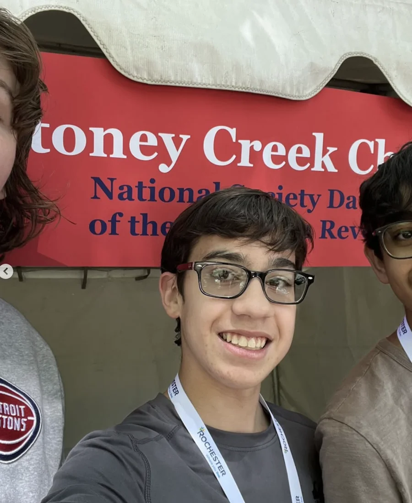

Community events / May 30–31, 2026
A booth. A seed.
A community connection.
Our largest event · 7,000 people
At the Rochester Heritage Festival, OSI volunteers welcomed visitors to try planting activities and learn together. The photos tell the story: helping hands, shared curiosity, and time spent connecting.


